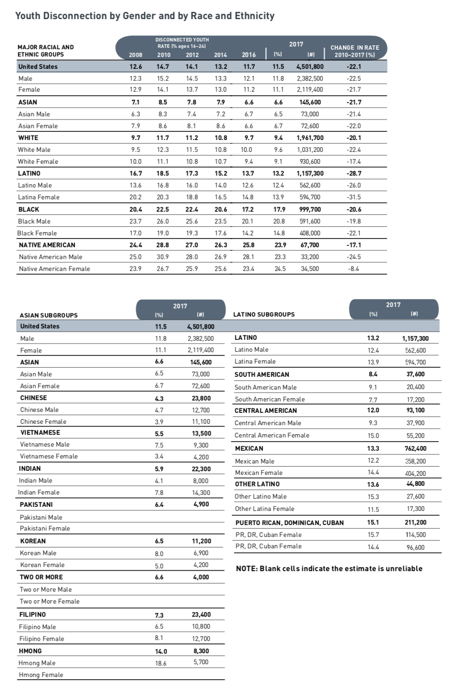

Main Questions
Our main questions:
- How have youth disconnection rates in American youth changed since 2008?
- In particular, how has this changed for different gender and ethnic groups? Are any groups particularly disconnected?
MICHAEL ONTIVEROS
There are some existing typos in the tables in addition to those produced during the use of Magick. I made some assumptions along the way, documenting them. These need to be checked for accuracy.
Disclaimer: The purpose of the Open Case Studies project is to demonstrate the use of various data science methods, tools, and software in the context of messy, real-world data. A given case study does not cover all aspects of the research process, is not claiming to be the most appropriate way to analyze a given data set, and should not be used in the context of making policy decisions without external consultation from scientific experts.
This work is licensed under the Creative Commons Attribution-NonCommercial 3.0 (CC BY-NC 3.0) United States License.
To cite this case study please use:
Wright, Carrie, and Ontiveros, Michael and Jager, Leah and Taub, Margaret and Hicks, Stephanie. (2020). https://github.com/opencasestudies/ocs-youth-disconnection-case-study. Disparities in Youth Disconnection (Version v1.0.0).
According to this report youth disconnection although generally showing decreasing trends for the past 7 years, shows racial and ethnic disparities, where some groups are showing increased rates of disconnection.
So what does the term “youth disconnection” mean?
According to Measure of America (a nonpartisan project of the nonprofit Social Science Research Council that is focused on opportunity in the United States) disconnected youth are:
“young people between the ages of 16 and 24 who are neither working nor in school”
They state that such disconnection hinders these individuals to aquire skills and create relationships necessary to have a sucessful adulthood.
They state that:
“people who experience a period of disconnection as young adults go on to earn less and are less likely to be employed, own a home, or report good health by the time they reach their thirties”
Disconnected youth are also referred to as opportunity youth, which has the added positive connotation that promoting such individuals can be beneficial not only for these individuals but also for their communties and for society.
We will expand beyond the Measure of America annual report to take a deeper look at differences of specific groups of youths. Identifying youths particularly at risk or disconnected, can help inform the design of targeted prevention and rengagement strategies.
This case study is motivated by this article:
Mendelson, T., Mmari, K., Blum, R. W., Catalano, R. F. & Brindis, C. D. Opportunity Youth: Insights and Opportunities for a Public Health Approach to Reengage Disconnected Teenagers and Young Adults. Public Health Rep 133, 54S-64S (2018).
This article describes strategies for prevention of disconnection and reengagement of discconnected youth and how such interventions could greatly positively impact opportunity youth for the entire trajectory of their lives and for future generations. It also points out that indeed their are disparities among different racial/ethnic groups.
Our main questions:
In this case study, we will demonstrate how to import and wrangle data available in the Portable Document Format (PDF). We will especially focus on using packages and functions from the Tidyverse, such as dplyr, ggplot2. The tidyverse is a library of packages created by RStudio. While some students may be familiar with previous R programming packages, these packages make data science in R more legible and intuitive.
The skills, methods, and concepts that students will be familiar with by the end of this case study are:
Data science skills:
magick packagedplyr for data wranglingtidyr)dplyrggplot2 that are in a similar style to an existing imageStatistical concepts and methods:

We will begin by loading the packages that we will need:
library(here)
library(tidyverse)
library(dplyr)
library(tidyr)
library(magrittr)
library(pdftools)
library(magick)
library(cowplot)
library(Kendall)| Package | Use |
|---|---|
| here | to easily load and save data |
| tidyverse | for data science operations |
| pdftools | to manage PDF documents |
| magick | for image processing |
The first time we use a function, we will use the :: to indicate which package we are using. Unless we have overlapping function names, this is not necessary, but we will include it here to be informative about where the functions we will use come from.
So how does youth disconnection happen and what impact does it have?
There are many known risk factors, which have been identified in a variety of contexts (from family, friends, school, community, society) including:
These risk factors make it more likely for young people to miss out on education, training, and networking that can act as a foundation for a sucessful career.
There are also many known negative consequences associated with youth disconnection including but not limited to:
 Photo by Jon Tyson on Unsplash
Photo by Jon Tyson on Unsplash
Furthermore, in 2012 it was estimated that each disconnected youth costs taxpayers $250000 during a life time due to lost tax revenue and costs for social sercices, heath care and criminal justice.
Youth disconnection can be described as a continuum, as some youths will be disconnected for a brief time, while others are chronically disconnected. Additionally, while an individual who is out of school and work and also has poor support from the realtionships of others may be further disconnected than an individual who has social support.
Here is an illustration of risk factors, protective factors and the continuum of disconnection:
 ##### [source]
##### [source]
Many programs have identified useful strategies in rengaging disconnected youth or preventing discconection of youth.
generally speaking, most programs focus on reengagement strategies, however, prevention strategies are likely to be just as important.
Reserach suggests that active involvement with at risk youth from infancy and across multiple developmental stages through young adulthood whould be the most beneficial.
In fact, the quality of parental caregiving of infants age 6-24 months has actually been shown to be a predictor of high school dropout rates! Thus early interventions may be very important and consistent continual engagement may prevent further disconnection of youths.
Prevention strategies include:
See here and here for listings of programs dedicated to rengaging disconnected youth or preventing disconnection.
See here and here for particular examples.
The statistics used in this section came from this article.
There are some important considerations regarding this data analysis to keep in mind:
This data used in the Measure of America project reports from the is derived from American Community Survey(ASC) which excludes or underrepresents certain opportunity youth groups, such as youths in the juvenile justice system, youths in the foster care system, and homeless youths as the survey is conducted on households. Furthermore, youths who may be more disconnected for other reasons besides not being in work or school, such as dealing with the added challenge of being a teenage mother, or being abused is not available in this dataset. Thus, this data likely underestimates youth disconnection rates.
Data about certain group intersections (meaning for example individuals of a particular gender and ethnicity) or particular groups in general such as specific ethnicities or gender or sexual identity groups such as LGBT (lesbian/gay/bisexual/transgender/queer and questioning) or nonbinary gender populations is unfortunately not available in the data used in this analysis and in most research about this topic. Luckily however, recent years of the ACS survey has more detailed infromation about a greater number of racial and ethnic groups and racial/ethnic intersections.
The statistical procedures we are using may be overly simplistic. In all data analysis, we need to be wary about deriving meaning from the statistical procedures we use.
Using image processing tools can be very helpful. The manner in which data is obtained with image processing tools is what we would describe as a black box process, a process with known inputs and outputs but unknown mechanics. Because we are unaware of how our outputs are generated from our inputs, we need to be wary of the output. With the small output we are creating in this case study, a visual inspection should suffice.
In this case study we will be using data related to youth disconnection from the two following reports from the Measure of America project:
Measure of America is a nonpartisan project of the nonprofit Social Science Research Council founded in 2007 to create easy-to-use yet methodologically sound tools for understanding well-being and opportunity in America. Through reports, interactive apps, and custom-built dashboards, Measure of America works with partners to breathe life into numbers, using data to identify areas of highest need, pinpoint levers for change, and track progress over time.

The data used in these reports comes from the American Community Survey(ASC), which is the largest survey conducted by the United States Census Bureau. The survey started in 2005 and collects data for 3.5 million households annually. Data is collected about ancestry, citizehsip, income, employment, disability among many other aspects. See here for more detailed information about the survey.
According to Wikipedia (https://en.wikipedia.org/wiki/American_Community_Survey){target="_blank"}:
Data is collected by internet, mail, telephone interviews and in-person interviews…About 95 percent of households across all response modes ultimately respond… ACS responses are confidential… and “immune from legal process”
It is a mandatory survey, it is governed by federal laws that could impose a fine of as much as $5,000 for refusing to participate.
We are particuarlly interesed in the following tables on the last page of the Measure of America 2019 report:

We are particuarlly interesed in the tables on the following pages from the Measure of America 2020 report:


One way to import data from a pdf is to use the pdf_text() function of the pdftools package. The here() function of the here package can allow us to specify where the document that we want to import is located easily, starting from the directory where a .Rproj file is located. In this case, we will import the Making_the_Connection.pdf in the docs directory. Note this is the case if you pull the repository from github.
We can take a look at the output for the page with our table of interests by simpy using brackets [] around the page number. The page we are interested in (athough called 39 in the report) is the 44th page, which looks like this:
[1] "Youth Disconnection by Gender and by Race and Ethnicity\n I NDI CATOR TA BLE S\n DISCONNECTED YOUTH\nMAJOR RACIAL AND RATE (% ages 16–24) 2017 CHANGE IN RATE\nETHNIC GROUPS 2008 2010 2012 2014 2016 (%) (#) 2010–2017 (%)\nUnited States 12.6 14.7 14.1 13.2 11.7 11.5 4,501,800 -22.1\nMale 12.3 15.2 14.5 13.3 12.1 11.8 2,382,500 -22.5\nFemale 12.9 14.1 13.7 13.0 11.2 11.1 2,119,400 -21.7\nASIAN 7.1 8.5 7.8 7.9 6.6 6.6 145,600 -21.7\nAsian Male 6.3 8.3 7.4 7.2 6.7 6.5 73,000 -21.4\nAsian Female 7.9 8.6 8.1 8.6 6.6 6.7 72,600 -22.0\nWHITE 9.7 11.7 11.2 10.8 9.7 9.4 1,961,700 -20.1\nWhite Male 9.5 12.3 11.5 10.8 10.0 9.6 1,031,200 -22.4\nWhite Female 10.0 11.1 10.8 10.7 9.4 9.1 930,600 -17.4\nLATINO 16.7 18.5 17.3 15.2 13.7 13.2 1,157,300 -28.7\nLatino Male 13.6 16.8 16.0 14.0 12.6 12.4 562,600 -26.0\nLatina Female 20.2 20.3 18.8 16.5 14.8 13.9 594,700 -31.5\nBLACK 20.4 22.5 22.4 20.6 17.2 17.9 999,700 -20.6\nBlack Male 23.7 26.0 25.6 23.5 20.1 20.8 591,600 -19.8\nBlack Female 17.0 19.0 19.3 17.6 14.2 14.8 408,000 -22.1\nNATIVE AMERICAN 24.4 28.8 27.0 26.3 25.8 23.9 67,700 -17.1\nNative American Male 25.0 30.9 28.0 26.9 28.1 23.3 33,200 -24.5\nNative American Female 23.9 26.7 25.9 25.6 23.4 24.5 34,500 -8.4\n 2017 2017\n ASIAN SUBGROUPS (%) (#) LATINO SUBGROUPS (%) (#)\n United States 11.5 4,501,800\n Male 11.8 2,382,500 LATINO 13.2 1,157,300\n Female 11.1 2,119,400 Latino Male 12.4 562,600\n ASIAN 6.6 145,600 Latina Female 13.9 594,700\n Asian Male 6.5 73,000 SOUTH AMERICAN 8.4 37,600\n Asian Female 6.7 72,600 South American Male 9.1 20,400\n CHINESE 4.3 23,800 South American Female 7.7 17,200\n Chinese Male 4.7 12,700 CENTRAL AMERICAN 12.0 93,100\n Chinese Female 3.9 11,100 Central American Male 9.3 37,900\n VIETNAMESE 5.5 13,500 Central American Female 15.0 55,200\n Vietnamese Male 7.5 9,300\n MEXICAN 13.3 762,400\n Vietnamese Female 3.4 4,200\n Mexican Male 12.2 358,200\nINDIAN 5.9 22,300\n Mexican Female 14.4 404,200\nIndian Male 4.1 8,000 OTHER LATINO 13.6 44,800\nIndian Female 7.8 14,300\n Other Latino Male 15.3 27,600\n PAKISTANI 6.4 4,900\n Other Latina Female 11.5 17,300\n Pakistani Male\n PUERTO RICAN, DOMINICAN, CUBAN 15.1 211,200\n Pakistani Female\n PR, DR, Cuban Female 15.7 114,500\n KOREAN 6.5 11,200\n PR, DR, Cuban Female 14.4 96,600\n Korean Male 8.0 6,900\n Korean Female 5.0 4,200\n NOTE: Blank cells indicate the estimate is unreliable\n TWO OR MORE 6.6 4,000\n Two or More Male\n Two or More Female\nFILIPINO 7.3 23,400\nFilipino Male 6.5 10,800\nFilipino Female 8.1 12,700\nHMONG 14.0 8,300\nHmong Male 18.6 5,700\nHmong Female\nMAKING THE CONNECTION | Transportation and Youth Disconnection 39\n"From the output, it’s clear that a relatively large amount of manipulation will be required to wrangle this data. If you are interested in learning more about this method, please see this case study and this case study.
While not impossible, using the pdftools package in this scenario will be a bit challenging becuase of how the multiple tables are displayed on this page.
While our output may be reproducible, this process may be too time consuming.
Fortunately, there is another way we can proceed to wrangle the data.
We will demonstrate how to produce reproducible tables with image processing software in R using a package called magick which allows for the extraction of text from images. The advantage of this option, is that we can take a screenshot of just a piece of the page to wrangle.
For demonstrative purposes, we will import two sets of data. The first set of data will be used to highlight common errors that the image processing software may produce. The second set of data will be used to demonstrate how to circumvent these errors and produce reproducible datasets efficiently.
magickWe will now import the data using the magick package which allows for the improtation of images.
First we will take a screenshot of the top part of the gender, race, and ethnicity table on the last page of the 2019 Measure of America Report.
We can show what this file looks like in this rendered rmarkdown website by using the include_graphics() function of the knitr package.
Now, we will use the image_read() function of the magick package to import this image.
We can then use teh image_info() function to make sure that the import worked and to get information about the size, format and color of the image.
Major_racial_ethnic_groups <- magick::image_read(here::here("img", "gender_race_ethnicity.png"))
magick::image_info(Major_racial_ethnic_groups)# A tibble: 1 x 7
format width height colorspace matte filesize density
<chr> <int> <int> <chr> <lgl> <int> <chr>
1 PNG 997 711 sRGB TRUE 164964 72x72 Now let’s take a look at our image in R! Now that we have imported it to see this image, we simply need to type the name of the image.

Nice!
We will demonstrate in a bit that the top part of the table causes issues when extracting the text from this image. So now we will take a screen shot without the top part of the table and do the same process.
cropped_table_gen_race_eth_2018 <- image_read(here("img", "gender_race_ethnicity2.png"))
cropped_table_gen_race_eth_2018 Let’s import one more image just for fun. Here we will import an image directly from a URL.
Let’s import one more image just for fun. Here we will import an image directly from a URL.
ggplot2_logo <- image_read("https://d33wubrfki0l68.cloudfront.net/2c6239d311be6d037c251c71c3902792f8c4ddd2/12f67/css/images/hex/ggplot2.png")
ggplot2_logo
Now we will use the image_ocr() function of the magick package to extract the text from the OCS logo image. This function uses the tesseract package which has tools for optical character recognition (OCR), hence the ocr in the function name. This allows the function to identify text in images. These OCR tools have often been developed using machine learning in which an algorithm was trained on images with and without text to “learn” to recognize text. See here to learn more about how OCR works.
[1] "ggplot2\n"Awesome! We were able to extract text from this hex sticker!
One thing to keep in mind is that this doesn’t always work. Unusual font, angles text, or particular colors can be difficult for the OCR to recoginize.
Here is an example that does not work with the current version of magick:

[1] ""This is likely do to the background on this particular hex sticker.
Now let’s try extracting the text from our image files.
The first image we imported looks like this.

Now we will extract the text!
[1] "Youth Disconnection by Gender and by Race and Ethnicity\nbyte) ee\nMAJOR RACIAL AND Cr erent) ed Nas\nUnited States 126 147 14.1 13.21.7115 4,501,800 22.1\nMale 12.3 15.2 14.5 13.3 12.1 11.8 2,382,500 -22.5\nFemale 12.9 14.1 13.7 13.0 11.2 11.1 2,119,400 -21.7\nASIAN 71 85 78 19 66 66 145,600 -21.7\nAsian Male 6.3 8.3 74 7.2 6.7 65 73,000 -21.4\nAsian Female 7.9 8.6 8.1 8.6 6.6 6.7 72,600 -22.0\nWHITE 97 210897 9.4 1,961,700 -20.1\nWhite Male 95 12.3 11.5 10.8 10.0 9.6 1,031,200 -22.4\nWhite Female 10.0 11.1 10.8 10.7 9.4 91 930,600 -17.4\nLATINO 167-185 17.3 15.2 13.7 =~ 138.2_—_—‘1,157,300 -28.7\nLatino Male 13.6 16.8 16.0 14.0 12.6 12.4 562,600 -26.0\nLatina Female 20.2 20.3 18.8 16.5 14.8 13.9 594,700 -31.5\nBLACK 20.4 225 224 206 17.2 17.9 999,700 -20.6\nBlack Male 23.7 26.0 25.6 23.5 20.1 20.8 591,600 -19.8\nBlack Female 17.0 19.0 19.3 17.6 14.2 14.8 408,000 -22.1\nNATIVE AMERICAN 264 288 27.0 23 28 23.9 67,700 -17.1\nNative American Male 25.0 30.9 28.0 26.9 28.1 23.3 33,200 -24.5\nNative American Female 23.9 26.7 25.9 25.6 23.4 24.5 34,500 -B.4\n"This looks like it worked fairly well!
You may notice that there are lots of \n values in the text from our image. These are newline characters, which denote the end of a line of text and the start of a new line of text.
We can use the str_split() function of the stringr package to split based on the \n characters in the output. We will then unlist the output using the base R unlist() function. By base, we mean that the function it is loaded automatically in an R session. Finally we will use the as_tibble() function of the tibble package to convert the data into tibble format, which is the tidyverse version of a data frame. This will allow us to see the values in the table much better.
To do all of these sequential steps efficiently we will use a method called piping.
Click here if you are unfamiliar with piping in R, which uses this
%>% operator.
%>% pipe operator which is accessible after loading the tidyverse or several of the packages within the tidyverse like dplyr because they load the magrittr package. This allows us to perform multiple sequential steps on one data input.
# A tibble: 22 x 1
value
<chr>
1 Youth Disconnection by Gender and by Race and Ethnicity
2 byte) ee
3 MAJOR RACIAL AND Cr erent) ed Nas
4 United States 126 147 14.1 13.21.7115 4,501,800 22.1
5 Male 12.3 15.2 14.5 13.3 12.1 11.8 2,382,500 -22.5
6 Female 12.9 14.1 13.7 13.0 11.2 11.1 2,119,400 -21.7
7 ASIAN 71 85 78 19 66 66 145,600 -21.7
8 Asian Male 6.3 8.3 74 7.2 6.7 65 73,000 -21.4
9 Asian Female 7.9 8.6 8.1 8.6 6.6 6.7 72,600 -22.0
10 WHITE 97 210897 9.4 1,961,700 -20.1
# … with 12 more rowsOK, not bad, the top looks a bit strange but the rest of the table looks fairly good, but there are some rows that look particularly strange like the row that starts with LATINO, or you may notice that the row for Native American females ends with -B.4:
[[1]]
[1] "LATINO" "167-185" "17.3"
[4] "15.2" "13.7" "=~"
[7] "138.2_—_—‘1,157,300" "-28.7" [[1]]
[1] "Native" "American" "Female" "23.9" "26.7" "25.9"
[7] "25.6" "23.4" "24.5" "34,500" "-B.4" Data wrangling is not an exact science. The approaches we can take are extremely dependent on the data. We can exploit patterns in the data to render the output we desire.
The first few lines of our table have quite a bit of special formatting, there are different font colors and backgrounds. As we saw previously, this can sometimes cause issues. So now we will try using the cropped version of the image.
To take a look at how the cropped version of the image does, we will need to again split the single extracted character string from the image based on the newline expression.
One option is to copy and paste code we wrote above. However, this is not very efficient and is error prone. Alternatively, we can create a R function to accomplish this succinctly. Functions allow us to perform the same process on multiple data inputs. See this other case study for more details about how to write a function.
In general, the process of writing functions involves first specifying an input that is used within the function to create an output. In this case, the data input is text which will be replaced by the actual image text that we are working on, and then used in the subsequent steps to wrangle the data. We will call our function make_rows().
Now we will use this function on our cropped version of the image, after we extract the text.

major_groups <- image_ocr(cropped_table_gen_race_eth_2018)
major_groups <- make_rows(major_groups)
major_groups# A tibble: 19 x 1
value
<chr>
1 "United States 12.6 14.7 14.1 13.2 11.7 11.5 4,501,800 -22.1"
2 "Male 12.3 15.2 14.5 13.3 12.1 11.8 2,382,500 -22.5"
3 "Female 12.9 14.1 13.7 13.0 11.2 11.1 2,119,400 -21.7"
4 "ASIAN 71 8.5 7.8 79 6.6 6.6 145,600 -21.7"
5 "Asian Male 63 8.3 74 7.2 67 6.5 73,000 -21.4"
6 "Asian Female 79 8.6 8.1 8.6 6.6 67 72,600 -22.0"
7 "WHITE 9.7 11.7 11.2 10.8 9.7 94 1,961,700 -20.1"
8 "White Male 95 12.3 11.5 10.8 10.0 9.6 1,031,200 -22.4"
9 "White Female 10.0 11.1 10.8 10.7 9.4 9.1 930,600 -17.4"
10 "LATINO 16.7 18.5 17.3 15.2 13.7 13.2 1,157,300 -28.7"
11 "Latino Male 13.6 16.8 16.0 14.0 12.6 12.4 562,600 -26.0"
12 "Latina Female 20.2 20.3 18.8 16.5 14.8 13.9 594,700 -31.5"
13 "BLACK 20.4 22.5 22.4 20.6 17.2 17.9 999,700 -20.6"
14 "Black Male 23.7 26.0 25.6 23.5 20.1 20.8 591,600 -19.8"
15 "Black Female 17.0 19.0 19.3 17.6 14.2 14.8 408,000 -22.1"
16 "NATIVE AMERICAN 24.4 28.8 27.0 26.3 25.8 23.9 67,700 -17.1"
17 "Native American Male 25.0 30.9 28.0 26.9 28.1 23.3 33,200 -24.5"
18 "Native American Female 23.9 26.7 25.9 25.6 23.4 24.5 34,500 -8.4"
19 "" Great! Our function works, and this looks much better!
Now let’s spearate the first column about ethnicities with the values in the subsequent columns. We can do so using the separate() function of the tidyr pacakge based on regular expressions. Regular expressions (abbreviated regex) are notation shortcuts that describe patterns in character strings. See here for an RStudio cheetsheat about them.
We want to separate by instances where a letter is followed by a space and then a number.
We can specify any letter by using the regex [:alpha:] notation and any number by using the regex [:digit] notation. We could have listed every letter that we saw the first column ending with like so s|e|E|O|K|N but this would not be as reproducible (meaning maybe this would not work as well next year if a new group were added that ended in a different letter), and we might make a mistake. This is why the regex are so useful.
We can indicate that we want a space by using this regex:

Now to specify that we want to see a letter first followed by a space, followed by a digit, we need to use a look around:
We will use the “preceded by” and “followed by” look arounds. Thus (?<=[:alpha:]) stands for any letter that appears before a space \\s that is followed by any digit (?=[0-9]). Altogether the pattern we want to separate by looks like this: "(?<=[:alpha:])\\s(?=[0-9])".
Now to separate the value column into two cloumns, we can use the separate function of the tidyr pacakge to do this. This will allow us to not only split the rows by our regex expression, but also to create column names.
There are three important arguments for the seperate() function:
- col - this specifies what column you are separating
- into - this specifies the names of the new columns you are creating
- sep - this specifies what character string to look for to separate by
Thus we will separate the value column into Group and years columns.
major_groups <-major_groups %>%
tidyr::separate(col = value, into = c("Group", "Years"), sep = "(?<=[:alpha:])\\s(?=[0-9])")
major_groups# A tibble: 19 x 2
Group Years
<chr> <chr>
1 "United States" 12.6 14.7 14.1 13.2 11.7 11.5 4,501,800 -22.1
2 "Male" 12.3 15.2 14.5 13.3 12.1 11.8 2,382,500 -22.5
3 "Female" 12.9 14.1 13.7 13.0 11.2 11.1 2,119,400 -21.7
4 "ASIAN" 71 8.5 7.8 79 6.6 6.6 145,600 -21.7
5 "Asian Male" 63 8.3 74 7.2 67 6.5 73,000 -21.4
6 "Asian Female" 79 8.6 8.1 8.6 6.6 67 72,600 -22.0
7 "WHITE" 9.7 11.7 11.2 10.8 9.7 94 1,961,700 -20.1
8 "White Male" 95 12.3 11.5 10.8 10.0 9.6 1,031,200 -22.4
9 "White Female" 10.0 11.1 10.8 10.7 9.4 9.1 930,600 -17.4
10 "LATINO" 16.7 18.5 17.3 15.2 13.7 13.2 1,157,300 -28.7
11 "Latino Male" 13.6 16.8 16.0 14.0 12.6 12.4 562,600 -26.0
12 "Latina Female" 20.2 20.3 18.8 16.5 14.8 13.9 594,700 -31.5
13 "BLACK" 20.4 22.5 22.4 20.6 17.2 17.9 999,700 -20.6
14 "Black Male" 23.7 26.0 25.6 23.5 20.1 20.8 591,600 -19.8
15 "Black Female" 17.0 19.0 19.3 17.6 14.2 14.8 408,000 -22.1
16 "NATIVE AMERICAN" 24.4 28.8 27.0 26.3 25.8 23.9 67,700 -17.1
17 "Native American Male" 25.0 30.9 28.0 26.9 28.1 23.3 33,200 -24.5
18 "Native American Female" 23.9 26.7 25.9 25.6 23.4 24.5 34,500 -8.4
19 "" <NA> Looks good!
Let’s also get rid of the all caps for the major categories of the Group column. We can convert the words to only capitalize the first letter using the str_to_title() function of the stringr package. To specifically modify the Group column we can use the mutate function of the dplyr package.
We are also going to use a special pipe operator from the magrittr package called the compound assignment pipe-operator or sometimes the double pipe operator.
This allows us to use the major_groups as our input and reassign it at the end after all the subsequent steps have been performed, although in this case it is only one step.
# A tibble: 19 x 2
Group Years
<chr> <chr>
1 "United States" 12.6 14.7 14.1 13.2 11.7 11.5 4,501,800 -22.1
2 "Male" 12.3 15.2 14.5 13.3 12.1 11.8 2,382,500 -22.5
3 "Female" 12.9 14.1 13.7 13.0 11.2 11.1 2,119,400 -21.7
4 "Asian" 71 8.5 7.8 79 6.6 6.6 145,600 -21.7
5 "Asian Male" 63 8.3 74 7.2 67 6.5 73,000 -21.4
6 "Asian Female" 79 8.6 8.1 8.6 6.6 67 72,600 -22.0
7 "White" 9.7 11.7 11.2 10.8 9.7 94 1,961,700 -20.1
8 "White Male" 95 12.3 11.5 10.8 10.0 9.6 1,031,200 -22.4
9 "White Female" 10.0 11.1 10.8 10.7 9.4 9.1 930,600 -17.4
10 "Latino" 16.7 18.5 17.3 15.2 13.7 13.2 1,157,300 -28.7
11 "Latino Male" 13.6 16.8 16.0 14.0 12.6 12.4 562,600 -26.0
12 "Latina Female" 20.2 20.3 18.8 16.5 14.8 13.9 594,700 -31.5
13 "Black" 20.4 22.5 22.4 20.6 17.2 17.9 999,700 -20.6
14 "Black Male" 23.7 26.0 25.6 23.5 20.1 20.8 591,600 -19.8
15 "Black Female" 17.0 19.0 19.3 17.6 14.2 14.8 408,000 -22.1
16 "Native American" 24.4 28.8 27.0 26.3 25.8 23.9 67,700 -17.1
17 "Native American Male" 25.0 30.9 28.0 26.9 28.1 23.3 33,200 -24.5
18 "Native American Female" 23.9 26.7 25.9 25.6 23.4 24.5 34,500 -8.4
19 "" <NA> Nice! that looks better.
For the year data we would like to try splitting the strings for each row into different columns based on a space. Currently all the data is listed in one column called Years.
We can use the separate function of the tidyr pacakge again to do this. This will allow us to not only split the rows by spaces and will also allow us to remove the last two columns, as we will not provide names for these.
major_groups %<>%
tidyr::separate(col = Years,
into = c("2008", "2010",
"2012", "2014",
"2016", "2017"),
sep = " ")
major_groups# A tibble: 19 x 7
Group `2008` `2010` `2012` `2014` `2016` `2017`
<chr> <chr> <chr> <chr> <chr> <chr> <chr>
1 "United States" 12.6 14.7 14.1 13.2 11.7 11.5
2 "Male" 12.3 15.2 14.5 13.3 12.1 11.8
3 "Female" 12.9 14.1 13.7 13.0 11.2 11.1
4 "Asian" 71 8.5 7.8 79 6.6 6.6
5 "Asian Male" 63 8.3 74 7.2 67 6.5
6 "Asian Female" 79 8.6 8.1 8.6 6.6 67
7 "White" 9.7 11.7 11.2 10.8 9.7 94
8 "White Male" 95 12.3 11.5 10.8 10.0 9.6
9 "White Female" 10.0 11.1 10.8 10.7 9.4 9.1
10 "Latino" 16.7 18.5 17.3 15.2 13.7 13.2
11 "Latino Male" 13.6 16.8 16.0 14.0 12.6 12.4
12 "Latina Female" 20.2 20.3 18.8 16.5 14.8 13.9
13 "Black" 20.4 22.5 22.4 20.6 17.2 17.9
14 "Black Male" 23.7 26.0 25.6 23.5 20.1 20.8
15 "Black Female" 17.0 19.0 19.3 17.6 14.2 14.8
16 "Native American" 24.4 28.8 27.0 26.3 25.8 23.9
17 "Native American Male" 25.0 30.9 28.0 26.9 28.1 23.3
18 "Native American Female" 23.9 26.7 25.9 25.6 23.4 24.5
19 "" <NA> <NA> <NA> <NA> <NA> <NA> Looks pretty good!
We appear to have an empty row at the very end. Since all the values are NA, we can use the drop_na() function of the tidyr package to remove it.
# A tibble: 18 x 7
Group `2008` `2010` `2012` `2014` `2016` `2017`
<chr> <chr> <chr> <chr> <chr> <chr> <chr>
1 United States 12.6 14.7 14.1 13.2 11.7 11.5
2 Male 12.3 15.2 14.5 13.3 12.1 11.8
3 Female 12.9 14.1 13.7 13.0 11.2 11.1
4 Asian 71 8.5 7.8 79 6.6 6.6
5 Asian Male 63 8.3 74 7.2 67 6.5
6 Asian Female 79 8.6 8.1 8.6 6.6 67
7 White 9.7 11.7 11.2 10.8 9.7 94
8 White Male 95 12.3 11.5 10.8 10.0 9.6
9 White Female 10.0 11.1 10.8 10.7 9.4 9.1
10 Latino 16.7 18.5 17.3 15.2 13.7 13.2
11 Latino Male 13.6 16.8 16.0 14.0 12.6 12.4
12 Latina Female 20.2 20.3 18.8 16.5 14.8 13.9
13 Black 20.4 22.5 22.4 20.6 17.2 17.9
14 Black Male 23.7 26.0 25.6 23.5 20.1 20.8
15 Black Female 17.0 19.0 19.3 17.6 14.2 14.8
16 Native American 24.4 28.8 27.0 26.3 25.8 23.9
17 Native American Male 25.0 30.9 28.0 26.9 28.1 23.3
18 Native American Female 23.9 26.7 25.9 25.6 23.4 24.5 Great, now we have 18 rows.
It’s important to look very carefully at the text. There are some values missing a decimal place. For example the row where the Group vlaue is Asian, the first value is missing a decimal place.
Looking at the orginal table we see that even values like 10 are represented as 10.0.
So, to fix this we will remove all decimals (which is sort of like multiplying all values that do have a decimal by 10) and then we will multiply all values by .01 to add the decimals back. We will use the mutate() function combined with the across() function which allows us to specify which columns we want to perform a function on. We want to do this to all the year columns, so we can exclude the Group column by using a minus sign - in the .cols argument of the across() function like so: mutate(across(.cols = -Group))
Finally, we will use the str_remove() function of the stringr package to find instances of “.” and remove them. Since “.” is a regex, and indicates any character string, thus we need “\” to have R interpret a decimal or a period instead, as we can see from the RStudio cheetsheat:

To pass the data from all the coulumns except our Group variable into our str_remove() function, we need to use the . notation as a replacement for the data that we specified by the .colsargument and we need to use ~ in front of the function name.
major_groups %<>%
mutate(across(.cols = -Group, ~str_remove(string = .,
pattern = "\\.")))
major_groups# A tibble: 18 x 7
Group `2008` `2010` `2012` `2014` `2016` `2017`
<chr> <chr> <chr> <chr> <chr> <chr> <chr>
1 United States 126 147 141 132 117 115
2 Male 123 152 145 133 121 118
3 Female 129 141 137 130 112 111
4 Asian 71 85 78 79 66 66
5 Asian Male 63 83 74 72 67 65
6 Asian Female 79 86 81 86 66 67
7 White 97 117 112 108 97 94
8 White Male 95 123 115 108 100 96
9 White Female 100 111 108 107 94 91
10 Latino 167 185 173 152 137 132
11 Latino Male 136 168 160 140 126 124
12 Latina Female 202 203 188 165 148 139
13 Black 204 225 224 206 172 179
14 Black Male 237 260 256 235 201 208
15 Black Female 170 190 193 176 142 148
16 Native American 244 288 270 263 258 239
17 Native American Male 250 309 280 269 281 233
18 Native American Female 239 267 259 256 234 245 Great, now in order to multiply each value by 0.1 we need to first make the values numeric. Currently we can tell that they are character strings based on the <char> values listed under each column name.
Click here for an explanation about data types in R and about character strings.
There are several classes of data in R programming. Character is one of these classes. A character string is an individual data value made up of characters. This can be a paragraph, like the legend for the table, or it can be a single letter or number like the letter "a" or the number "3". If data are of class character, than the numeric values will not be processed like a numeric value in a mathematical sense. If you want your numeric values to be interpreted that way, they need to be converted to a numeric class. The options typically used are integer (which has no decimal place) and double precision (which has a decimal place).
To convert our values to be numeric we can use the base as.numeric() function. Again we will use mutate() and across(). Since this function doesn’t require any arguments, we don’t need to specify it’s input like we just did for the str_remove() but we could do so as shown below.
major_groups %<>%
mutate(across(.cols = -Group, as.numeric))
#this is equivalent:
#major_groups %<>%
# mutate(across(.cols = -Group, ~as.numeric(.)))
major_groups# A tibble: 18 x 7
Group `2008` `2010` `2012` `2014` `2016` `2017`
<chr> <dbl> <dbl> <dbl> <dbl> <dbl> <dbl>
1 United States 126 147 141 132 117 115
2 Male 123 152 145 133 121 118
3 Female 129 141 137 130 112 111
4 Asian 71 85 78 79 66 66
5 Asian Male 63 83 74 72 67 65
6 Asian Female 79 86 81 86 66 67
7 White 97 117 112 108 97 94
8 White Male 95 123 115 108 100 96
9 White Female 100 111 108 107 94 91
10 Latino 167 185 173 152 137 132
11 Latino Male 136 168 160 140 126 124
12 Latina Female 202 203 188 165 148 139
13 Black 204 225 224 206 172 179
14 Black Male 237 260 256 235 201 208
15 Black Female 170 190 193 176 142 148
16 Native American 244 288 270 263 258 239
17 Native American Male 250 309 280 269 281 233
18 Native American Female 239 267 259 256 234 245Great, we can see that the year variables are now numeric as they are now type double as indicated by the <dbl> below each column name. See the above section about data types if you are unfamiliar with type double.
OK, now we can multiply each value by 0.1 to add our decimal points back and get back to the orginal values.
# A tibble: 18 x 7
Group `2008` `2010` `2012` `2014` `2016` `2017`
<chr> <dbl> <dbl> <dbl> <dbl> <dbl> <dbl>
1 United States 12.6 14.7 14.1 13.2 11.7 11.5
2 Male 12.3 15.2 14.5 13.3 12.1 11.8
3 Female 12.9 14.1 13.7 13 11.2 11.1
4 Asian 7.1 8.5 7.8 7.9 6.6 6.6
5 Asian Male 6.3 8.3 7.4 7.2 6.7 6.5
6 Asian Female 7.9 8.6 8.1 8.6 6.6 6.7
7 White 9.7 11.7 11.2 10.8 9.7 9.4
8 White Male 9.5 12.3 11.5 10.8 10 9.6
9 White Female 10 11.1 10.8 10.7 9.4 9.1
10 Latino 16.7 18.5 17.3 15.2 13.7 13.2
11 Latino Male 13.6 16.8 16 14 12.6 12.4
12 Latina Female 20.2 20.3 18.8 16.5 14.8 13.9
13 Black 20.4 22.5 22.4 20.6 17.2 17.9
14 Black Male 23.7 26 25.6 23.5 20.1 20.8
15 Black Female 17 19 19.3 17.6 14.2 14.8
16 Native American 24.4 28.8 27 26.3 25.8 23.9
17 Native American Male 25 30.9 28 26.9 28.1 23.3
18 Native American Female 23.9 26.7 25.9 25.6 23.4 24.5Now is a good time to double check that our table looks like what we expect.
Looks good!
We also want to add a couple of variables about Race_Ethnicity and Gender so that we can select across groups later. We can use the recode() function of the dplyr package to change specific values, as we create a new Race_Ethnicity variable from the Group variable. For the Data for all of the US we want the Race_Ethnicity variable values to be "All_races".
major_groups %<>%
mutate(Race_Ethnicity =
recode(Group, "United States" = "All_races",
"Female" = "All_races",
"Male" = "All_races"))We also want to remove Male and Female from this “Race_Ethnicity” variable, We can do so using the str_remove() function of the stringr package. Importantly, we are also removing the space beore “Female” and "Male.
major_groups %<>%
mutate(Race_Ethnicity = str_remove(string = Race_Ethnicity,
pattern = " Female| Male"))For the new Gender variable we would like to extract just the “Female” and “Male” text from the Group variable. The str_extract() function of the stringr package will do this, and it will give us an NA value for any rows whhere “Female” or “Male” were not present. We can then replace the NA values with the text “All” to represent the total value for both male and female using the replace_na() function of the tidyr() package.
major_groups %<>%
mutate(Gender = str_extract(string = Group,
pattern = "Female|Male")) %>%
mutate(Gender = replace_na(Gender, replace = "All"))We would also like to replace Latino and Latina with Latinx:
major_groups %<>%
mutate(across(.cols = c(Group, Race_Ethnicity),
~str_replace(string = .,
pattern = "Latino|Latina",
replacement = "Latinx")))To do so we will be making our table “longer”, meaning that it will have fewer columns and more rows. See here for more information about different table formats, typically referred to as wide and long or sometimes narrow.
We will use the pivot_longer() function of the tidyr package to change the shape of our table.
There are 3 main arguments in this function:
cols - which specifies what columns to collapsenames_to - which specifies the name of the new column that will be created that will contain the column names of the columns you are collapsingvalues_to - which specifies the name of the new column that will be created that will contain the values from the columns you are collapsingTo specify that we want to collapse all the columns that have year values, we can chose those that contain the string "20" using the contains() function of dplyr.
major_groups_long <- major_groups %>%
tidyr::pivot_longer(cols = contains("20"),
names_to = "Year",
values_to = "Percent",
names_prefix = "Perc_") %>%
dplyr::mutate(Year = as.numeric(Year))
major_groups_long# A tibble: 108 x 5
Group Race_Ethnicity Gender Year Percent
<chr> <chr> <chr> <dbl> <dbl>
1 United States All_races All 2008 12.6
2 United States All_races All 2010 14.7
3 United States All_races All 2012 14.1
4 United States All_races All 2014 13.2
5 United States All_races All 2016 11.7
6 United States All_races All 2017 11.5
7 Male All_races Male 2008 12.3
8 Male All_races Male 2010 15.2
9 Male All_races Male 2012 14.5
10 Male All_races Male 2014 13.3
# … with 98 more rowsNow we just need to do the same for the other two tables:
Now let’s do the same for the Asian subgroups table.
First we will start by importing a screenshot for this table without the header, as we did before. The name of the file for the screenshot is asian_subgroups.png and it is located in the img directory.
Question Opportunity
Can you recall the command to import an image into R using the magick package?
Click here to reveal the code.

Question Opportunity
Can you recall the command to extract the text from an image into R using the magick package? What about the commands to split the data into rows based on the newline regex ?
Click here to reveal the code.
[1] "United States 11.5 4,501,800\nMale 118 2,382,500\nFemale 4 2,119,400\nASIAN 66 145,600\nAsian Male 65 73,000\nAsian Female 67 72,600\nCHINESE 43 23,800\nChinese Male 47 12,700\nChinese Female 39 11,100\nVIETNAMESE 55 13,500\nVietnamese Male 75 9,300\nVietnamese Female 34 4,200\nINDIAN 59 22,300\nIndian Male 4A 8,000\nIndian Female 78 14,300\nPAKISTANI bh 4,900\nPakistani Male\nPakistani Female\nKOREAN 65 11,200\nKorean Male 80 6,900\nKorean Female 5.0 4,200\n‘TWO OR MORE 66 4,000\nTwo or More Male\n\n‘Two or More Female\n\nUNO\n\nFilipnoMale BS 10,800\nFilipino Female 81 12,700\nHMONG 16.0 8,300\nHmong Male 18.6 5,700\nHmong Female\n"# A tibble: 34 x 1
value
<chr>
1 United States 11.5 4,501,800
2 Male 118 2,382,500
3 Female 4 2,119,400
4 ASIAN 66 145,600
5 Asian Male 65 73,000
6 Asian Female 67 72,600
7 CHINESE 43 23,800
8 Chinese Male 47 12,700
9 Chinese Female 39 11,100
10 VIETNAMESE 55 13,500
# … with 24 more rowsAs you can see, there are some strange values for some of the rows. For example the row that starts with PAKISTANI has a bh percentage of disconnected youth, and the row that should say FILIPINO says UNO.
[[1]]
[1] "PAKISTANI" "bh" "4,900" [[1]]
[1] "UNO"The rows with no values are possibly cuasing this issue. According to the PDF, these spaces are empty to denote that the estimates are unreliable.
So we will now import and extract text from three screenshots of this table where we stop just after the row that starts with PAKISTANI in the first image, and then an image of the Korean rows up to the next row with no values, and finally an image starting at the row that starts with FILIPNO.
Asian_sub_A <- image_read(here("img", "asian_subgroupsA.png"))
Asian_sub_B <- image_read(here("img", "asian_subgroupsB.png"))
Asian_sub_C <- image_read(here("img", "asian_subgroupsC.png"))
Asian_sub_A


Asian_sub_A <- image_ocr(Asian_sub_A)
Asian_sub_B <- image_ocr(Asian_sub_B)
Asian_sub_C <- image_ocr(Asian_sub_C)
Asian_sub_A <- make_rows(Asian_sub_A)
Asian_sub_B <- make_rows(Asian_sub_B)
Asian_sub_C <- make_rows(Asian_sub_C)
Asian_sub_A # A tibble: 17 x 1
value
<chr>
1 "United States 11.5 4,501,800"
2 "Male 11.8 2,382,500"
3 "Female 11.1 2,119,400"
4 "ASIAN 6.6 145,600"
5 "Asian Male 6.5 73,000"
6 "Asian Female 6.7 72,600"
7 "CHINESE 4.3 23,800"
8 "Chinese Male 47 12,700"
9 "Chinese Female 3.9 11,100"
10 "VIETNAMESE 5.5 13,500"
11 "Vietnamese Male 7.5 9,300"
12 "Vietnamese Female 3.4 4,200"
13 "INDIAN 5.9 22,300"
14 "Indian Male 4.1 8,000"
15 "Indian Female 7.8 14,300"
16 "PAKISTANI 6.4 4,900"
17 "" # A tibble: 5 x 1
value
<chr>
1 "KOREAN 6.5 11,200"
2 "Korean Male 8.0 6,900"
3 "Korean Female 5.0 4,200"
4 "TWO OR MORE 6.6 4,000"
5 "" # A tibble: 6 x 1
value
<chr>
1 "FILIPINO 73 23,400"
2 "Filipino Male 6.5 10,800"
3 "Filipino Female 8.1 12,700"
4 "HMONG 14.0 8,300"
5 "Hmong Male 18.6 5,700"
6 "" Much better!
We can now combine the objects with the bind_rows() function of the dplyr package, which will append each of these tibbles together one after the other.
# A tibble: 28 x 1
value
<chr>
1 United States 11.5 4,501,800
2 Male 11.8 2,382,500
3 Female 11.1 2,119,400
4 ASIAN 6.6 145,600
5 Asian Male 6.5 73,000
6 Asian Female 6.7 72,600
7 CHINESE 4.3 23,800
8 Chinese Male 47 12,700
9 Chinese Female 3.9 11,100
10 VIETNAMESE 5.5 13,500
# … with 18 more rowsLooks pretty good!
Now we have similar wrangling steps to perform as we did previously and we will need to do the same for the Latinx subgroups table.
Question Opportunity
Can you explain what each of the commands are doing within the function?
clean_table <- function(table){
table %>%
separate(., col = value,
into = c("Group", "Percentage"),
sep = "(?<=[:alpha:])\\s(?=[0-9])") %>%
drop_na() %>%
mutate(Group = str_to_title(Group)) %>%
mutate(Percentage = str_remove(string = Percentage,
pattern = "\\.")) %>%
separate(Percentage, c("Percent"), sep = " ") %>%
mutate(Percent = as.numeric(Percent)) %>%
mutate(Percent = Percent * 0.1) %>%
mutate(Race_Ethnicity = recode(Group,
"United States" = "All_races",
"Female" = "All_races",
"Male" = "All_races")) %>%
mutate(Race_Ethnicity =
str_remove(string = Race_Ethnicity,
pattern = " Female| Male"))%>%
mutate(Gender =
str_extract(string = Group,
pattern ="Female|Male")) %>%
mutate(Gender = replace_na(Gender, replace = "All"))
}# A tibble: 25 x 4
Group Percent Race_Ethnicity Gender
<chr> <dbl> <chr> <chr>
1 United States 11.5 All_races All
2 Male 11.8 All_races Male
3 Female 11.1 All_races Female
4 Asian 6.6 Asian All
5 Asian Male 6.5 Asian Male
6 Asian Female 6.7 Asian Female
7 Chinese 4.3 Chinese All
8 Chinese Male 4.7 Chinese Male
9 Chinese Female 3.9 Chinese Female
10 Vietnamese 5.5 Vietnamese All
# … with 15 more rowsGreat! this looks as we expected.
Question Opportunity
Why do we not need to use pivot_longer() with this data?
After trial and error, two screenshots were determined best for importing this data. The names of the files for the screenshots are latinx_sub_A.png and "latinx_sub_B.png. They are located in the img directory.
Question Opportunity
Can you recall the commands to import and extract the data?
Click here to reveal the code.
latinx_imageA <- image_read(here::here("img", "latinx_sub_A.png"))
latinx_imageB <- image_read(here::here("img", "latinx_sub_B.png"))
latinx_imageC <- image_read(here::here("img", "latinx_sub_C.png"))
latinx_A <- image_ocr(latinx_imageA)
latinx_B <- image_ocr(latinx_imageB)
latinx_C <- image_ocr(latinx_imageC)
[1] "LATINO 13.2\nLatino Male 12.4\nLatina Female 13.9\n"
[1] "SOUTH AMERICAN 8.4\nSouth American Male 9.1\nSouth American Female 7.7\nCENTRAL AMERICAN 12.0\nCentral American Male 9.3\nCentral American Female 15.0\nMEXICAN 13.3\nMexican Male 12.2\nMexican Female 14.4\nOTHER LATINO 13.6\nOther Latino Male 15.3\nOther Latina Female 11.5\n"
[1] "PUERTO RICAN, DOMINICAN, CUBAN 15.1\nPR, DR, Cuban Female 15.7\nPR, DR, Cuban Female 14.4\n"We can combine the strings together using the str_c() function (wich stands for string collapse) of the stringr package.
Question Opportunity
Can you recall the commands within our make_rows() function to separate the data into rows and create a tibble?
Click here to reveal the code.
# A tibble: 19 x 1
value
<chr>
1 "LATINO 13.2"
2 "Latino Male 12.4"
3 "Latina Female 13.9"
4 "SOUTH AMERICAN 8.4"
5 "South American Male 9.1"
6 "South American Female 7.7"
7 "CENTRAL AMERICAN 12.0"
8 "Central American Male 9.3"
9 "Central American Female 15.0"
10 "MEXICAN 13.3"
11 "Mexican Male 12.2"
12 "Mexican Female 14.4"
13 "OTHER LATINO 13.6"
14 "Other Latino Male 15.3"
15 "Other Latina Female 11.5"
16 "PUERTO RICAN, DOMINICAN, CUBAN 15.1"
17 "PR, DR, Cuban Female 15.7"
18 "PR, DR, Cuban Female 14.4"
19 "" Now we can apply our function.
# A tibble: 18 x 4
Group Percent Race_Ethnicity Gender
<chr> <dbl> <chr> <chr>
1 Latino 13.2 Latino All
2 Latino Male 12.4 Latino Male
3 Latina Female 13.9 Latina Female
4 South American 8.4 South American All
5 South American Male 9.1 South American Male
6 South American Female 7.7 South American Female
7 Central American 12 Central American All
8 Central American Male 9.3 Central American Male
9 Central American Female 15 Central American Female
10 Mexican 13.3 Mexican All
11 Mexican Male 12.2 Mexican Male
12 Mexican Female 14.4 Mexican Female
13 Other Latino 13.6 Other Latino All
14 Other Latino Male 15.3 Other Latino Male
15 Other Latina Female 11.5 Other Latina Female
16 Puerto Rican, Dominican, Cuban 15.1 Puerto Rican, Dominican, Cuban All
17 Pr, Dr, Cuban Female 15.7 Pr, Dr, Cuban Female
18 Pr, Dr, Cuban Female 14.4 Pr, Dr, Cuban FemaleLet’s also replace the abbreviations for Puerto Rican and Domincan and let’s replace Latino/Latina with Latinx.
Question Opportunity
How might you do this?
Click here to reveal the code.
We will use another string_r function. This function, str_replace() allows us to remove and replace a particular pattern.
Great!
Now we are ready to look at the data from 2018 for the Asian and Latinx subgroups from the other report.
Recall that this was the page with the table of interest for the asian subgroups with 2018 data:
As you can see, the data for the subgroups is shown in the table but the overall data for Asians is located in the text.
We will use a screen shot of each to extract the data for this year.

 Trial and error indicated that again dividing the table into multiple screenshots improved the text extraction:
Trial and error indicated that again dividing the table into multiple screenshots improved the text extraction:
asian_sub_2018_A <- image_read(here::here("img", "asian_sub_2018_A.png"))
asian_sub_2018_A <- image_ocr(asian_sub_2018_A)
asian_sub_2018_B <- image_read(here::here("img", "asian_sub_2018_B.png"))
asian_sub_2018_B <- image_ocr(asian_sub_2018_B)
asian_sub_2018 <-str_c(asian_sub_2018_A, asian_sub_2018_B)# A tibble: 23 x 1
value
<chr>
1 "CHINESE : 41"
2 "Men 4.5"
3 "Women : 3.7"
4 ""
5 "INDIAN 5.4"
6 "Men 4.7"
7 "Women : 6.1"
8 ""
9 "KOREAN : 5.5"
10 "Men 5.6"
# … with 13 more rowsNow we need to modify our function a bit for this new data.
Firstly, we now have colons : in our table that we will want to separate by. Unfortunately, eachthe text in each row ins’t extracted in the same way by the OCR. Thus some rows have only a space, while others have a spaces around a colon; or for the row with VIETNAM we see a colon followed by a space. Thus we will modify our seperate() function with this change. We can specify that the separator between any letter and any digit should be either a space (\\s) or a colon with a space before and after it (\\s:\\s) using the or (|)opperator.
So this will look like this:
asian_sub_2018 %>%
separate(., col = value, into = c("Group", "Percent"), sep = "(?<=[:alpha:])\\s:\\s|\\s(?=[0-9])")# A tibble: 23 x 2
Group Percent
<chr> <chr>
1 "CHINESE" 41
2 "Men" 4.5
3 "Women" 3.7
4 "" <NA>
5 "INDIAN" 5.4
6 "Men" 4.7
7 "Women" 6.1
8 "" <NA>
9 "KOREAN" 5.5
10 "Men" 5.6
# … with 13 more rowsThen because of the row with VIETNAM, we will want to remove this colon using the str_remove() function like this:
asian_sub_2018 %>%
separate(., col = value, into = c("Group", "Percent"), sep = "(?<=[:alpha:])\\s:\\s|\\s(?=[0-9])")%>%
mutate(Group= str_remove(string = Group, pattern = ":"))The other difference from the previous function, is that we want to fill in a new Race_Ethnicity variable with the previous rows. We can do so by first replacing “Men” or “Women” which with the or operator is (“Men|Women”), with “missing”. Then we need to convert these to NA values using the na_if() function of the dplyr package, we just need to specify what column to modify and what value to change to NA. Finally we will then repace the NA values with the previous non-NA value using the fill() function of the tidyr package. Note that this does not work inside of the mutate() function. We just need to simply specify what column to modify and then the direction to replace values. In this case we want to replace in the downward direction using the previous values.
This will look like this:
asian_sub_2018 %>%
separate(., col = value, into = c("Group", "Percent"), sep = "(?<=[:alpha:])\\s:\\s|\\s(?=[0-9])") %>%
mutate(Group= str_remove(string = Group, pattern = ":")) %>%
mutate( Race_Ethnicity = str_replace(string = Group,
pattern = "Men|Women",
replacement = "missing")) %>%
head()# A tibble: 6 x 3
Group Percent Race_Ethnicity
<chr> <chr> <chr>
1 "CHINESE" 41 "CHINESE"
2 "Men" 4.5 "missing"
3 "Women" 3.7 "missing"
4 "" <NA> ""
5 "INDIAN" 5.4 "INDIAN"
6 "Men" 4.7 "missing" asian_sub_2018 %>%
separate(., col = value, into = c("Group", "Percent"), sep = "(?<=[:alpha:])\\s:\\s|\\s(?=[0-9])") %>%
mutate(Group= str_remove(string = Group, pattern = ":")) %>%
mutate( Race_Ethnicity = str_replace(string = Group,
pattern = "Men|Women",
replacement = "missing")) %>%
mutate( Race_Ethnicity = na_if( Race_Ethnicity, "missing")) %>%
head()# A tibble: 6 x 3
Group Percent Race_Ethnicity
<chr> <chr> <chr>
1 "CHINESE" 41 "CHINESE"
2 "Men" 4.5 <NA>
3 "Women" 3.7 <NA>
4 "" <NA> ""
5 "INDIAN" 5.4 "INDIAN"
6 "Men" 4.7 <NA> asian_sub_2018 %>%
separate(., col = value, into = c("Group", "Percent"), sep = "(?<=[:alpha:])\\s:\\s|\\s(?=[0-9])") %>%
mutate(Group= str_remove(string = Group, pattern = ":")) %>%
mutate( Race_Ethnicity = str_replace(string = Group,
pattern = "Men|Women",
replacement = "missing")) %>%
mutate(Race_Ethnicity = na_if( Race_Ethnicity, "missing")) %>%
fill(Race_Ethnicity, .direction = "down") %>%
head()# A tibble: 6 x 3
Group Percent Race_Ethnicity
<chr> <chr> <chr>
1 "CHINESE" 41 "CHINESE"
2 "Men" 4.5 "CHINESE"
3 "Women" 3.7 "CHINESE"
4 "" <NA> ""
5 "INDIAN" 5.4 "INDIAN"
6 "Men" 4.7 "INDIAN" OK! Now, let’s combine these pieces of our new function with the old pieces:
clean_table <- function(table){
table %>%
separate(., col = value, into = c("Group", "Percent"), sep = "(?<=[:alpha:])\\s:\\s|\\s(?=[0-9])") %>%
mutate(Group= str_remove(string = Group, pattern = ":")) %>%
drop_na() %>%
mutate(Group = str_to_title(string = Group)) %>%
mutate(Percent = str_remove(string = Percent,
pattern = "\\.")) %>%
mutate(Percent = as.numeric(Percent)) %>%
mutate(Percent = Percent * 0.1) %>%
mutate(Race_Ethnicity = str_replace(string = Group,
pattern = "Men|Women",
replacement = "missing")) %>%
mutate(Race_Ethnicity = na_if(Race_Ethnicity, "missing")) %>%
fill(Race_Ethnicity, .direction = "down") %>%
mutate(Gender = str_extract(string = Group,
pattern = "Men|Women")) %>%
mutate(Gender = replace_na(Gender, replace = "All"))
}# A tibble: 17 x 4
Group Percent Race_Ethnicity Gender
<chr> <dbl> <chr> <chr>
1 Chinese 4.1 Chinese All
2 Men 4.5 Chinese Men
3 Women 3.7 Chinese Women
4 Indian 5.4 Indian All
5 Men 4.7 Indian Men
6 Women 6.1 Indian Women
7 Korean 5.5 Korean All
8 Men 5.6 Korean Men
9 Women 5.4 Korean Women
10 Vietnamese 6.3 Vietnamese All
11 Men 7.6 Vietnamese Men
12 Women 5 Vietnamese Women
13 Filipino 6.8 Filipino All
14 Men 6.3 Filipino Men
15 Women 7.4 Filipino Women
16 Hmong 10.2 Hmong All
17 Cambodian 13.8 Cambodian All Looking good!
Now we just need to add the data for all Asians from the text.
We can do this using the add_row() function of the dplyr() package.
asian_sub_2018 %<>%
add_row(Group = "Asian",
Percent = 6.2,
Race_Ethnicity = "Asian",
Gender = "All") %>%
add_row(Group = "Asian",
Percent = 6.4,
Race_Ethnicity = "Asian",
Gender = "Men") %>%
add_row(Group = "Asian",
Percent = 6.1,
Race_Ethnicity = "Asian",
Gender = "Women")
asian_sub_2018# A tibble: 20 x 4
Group Percent Race_Ethnicity Gender
<chr> <dbl> <chr> <chr>
1 Chinese 4.1 Chinese All
2 Men 4.5 Chinese Men
3 Women 3.7 Chinese Women
4 Indian 5.4 Indian All
5 Men 4.7 Indian Men
6 Women 6.1 Indian Women
7 Korean 5.5 Korean All
8 Men 5.6 Korean Men
9 Women 5.4 Korean Women
10 Vietnamese 6.3 Vietnamese All
11 Men 7.6 Vietnamese Men
12 Women 5 Vietnamese Women
13 Filipino 6.8 Filipino All
14 Men 6.3 Filipino Men
15 Women 7.4 Filipino Women
16 Hmong 10.2 Hmong All
17 Cambodian 13.8 Cambodian All
18 Asian 6.2 Asian All
19 Asian 6.4 Asian Men
20 Asian 6.1 Asian Women OK, now we just want to combine the 2018 data and the 2017 data for the asian subgroups.
First let’s add a varaible for year to both. Using mutate() we can add a variable Year where all values are 2017 like so:
# A tibble: 25 x 5
Group Percent Race_Ethnicity Gender Year
<chr> <dbl> <chr> <chr> <dbl>
1 United States 11.5 All_races All 2017
2 Male 11.8 All_races Male 2017
3 Female 11.1 All_races Female 2017
4 Asian 6.6 Asian All 2017
5 Asian Male 6.5 Asian Male 2017
6 Asian Female 6.7 Asian Female 2017
7 Chinese 4.3 Chinese All 2017
8 Chinese Male 4.7 Chinese Male 2017
9 Chinese Female 3.9 Chinese Female 2017
10 Vietnamese 5.5 Vietnamese All 2017
# … with 15 more rows# A tibble: 20 x 5
Group Percent Race_Ethnicity Gender Year
<chr> <dbl> <chr> <chr> <dbl>
1 Chinese 4.1 Chinese All 2018
2 Men 4.5 Chinese Men 2018
3 Women 3.7 Chinese Women 2018
4 Indian 5.4 Indian All 2018
5 Men 4.7 Indian Men 2018
6 Women 6.1 Indian Women 2018
7 Korean 5.5 Korean All 2018
8 Men 5.6 Korean Men 2018
9 Women 5.4 Korean Women 2018
10 Vietnamese 6.3 Vietnamese All 2018
11 Men 7.6 Vietnamese Men 2018
12 Women 5 Vietnamese Women 2018
13 Filipino 6.8 Filipino All 2018
14 Men 6.3 Filipino Men 2018
15 Women 7.4 Filipino Women 2018
16 Hmong 10.2 Hmong All 2018
17 Cambodian 13.8 Cambodian All 2018
18 Asian 6.2 Asian All 2018
19 Asian 6.4 Asian Men 2018
20 Asian 6.1 Asian Women 2018You may notice that Gender is coded differently for the two years. Let’s make this consistent now:
asian_sub_2018 %<>%
mutate(across(.cols = c(Gender, Group),
~str_replace(string = .,
pattern = "Men",
replacement = "Male")),
across(.cols = c(Gender, Group),
~str_replace(string = .,
pattern = "Women",
replacement = "Female")))We can combine these two tibbles using the bind_rows() function of dplyr.
Now we are ready to peform similar wrangling for the Latinx subgroups.
Recall that this was the page with the table of interest for the Latinx subgroup 2018 data:
Trial and error indicated that again dividing the table into multiple screenshots improved the text extraction:
latinx_sub_2018 <- image_read(here::here("img", "latinx_subgroups_2018.png"))
latinx_sub_2018 <- image_ocr(latinx_sub_2018)
latinx_sub_2018[1] "SOUTH :\n\nAMERICAN : 8.0\nMen 7.5\nMEXICAN 12.9\nMen 12.0\nWomen 13.8\nPR, DR, CUBAN 13.7\nMen 14.9\nWomen 12.4\nCENTRAL\n\nAMERICAN : 13.7\nMen 11.8\nWomen : 15.9\n"Let’s first combine the South and Central American labels. Notice that there are multiple new line expressions in between and we dont see repeated \n characters elsewhere. We can replace the pattern of exactly two \n (using \n{2} to specify exactly 2) or two newline regex with a space and colon in front with a single space.
latinx_sub_2018 <- str_replace_all(string = latinx_sub_2018,
pattern = "\\s:\n{2}|\n{2}", replacement = " ")
latinx_sub_2018 [1] "SOUTH AMERICAN : 8.0\nMen 7.5\nMEXICAN 12.9\nMen 12.0\nWomen 13.8\nPR, DR, CUBAN 13.7\nMen 14.9\nWomen 12.4\nCENTRAL AMERICAN : 13.7\nMen 11.8\nWomen : 15.9\n"# A tibble: 12 x 1
value
<chr>
1 "SOUTH AMERICAN : 8.0"
2 "Men 7.5"
3 "MEXICAN 12.9"
4 "Men 12.0"
5 "Women 13.8"
6 "PR, DR, CUBAN 13.7"
7 "Men 14.9"
8 "Women 12.4"
9 "CENTRAL AMERICAN : 13.7"
10 "Men 11.8"
11 "Women : 15.9"
12 "" # A tibble: 11 x 4
Group Percent Race_Ethnicity Gender
<chr> <dbl> <chr> <chr>
1 South American 8 South American All
2 Men 7.5 South American Men
3 Mexican 12.9 Mexican All
4 Men 12 Mexican Men
5 Women 13.8 Mexican Women
6 Pr, Dr, Cuban 13.7 Pr, Dr, Cuban All
7 Men 14.9 Pr, Dr, Cuban Men
8 Women 12.4 Pr, Dr, Cuban Women
9 Central American 13.7 Central American All
10 Men 11.8 Central American Men
11 Women 15.9 Central American Women Again we will replace Pr, Dr, Cuban:
latinx_sub_2018 %<>%
mutate(Group =
str_replace(string = Group,
pattern = "Pr, Dr, Cuban",
replacement = "Puerto Rican, Dominican, Cuban"),
Race_Ethnicity =
str_replace(string = Race_Ethnicity,
pattern = "Pr, Dr, Cuban",
replacement = "Puerto Rican, Dominican, Cuban"))We also want to add the total Latinx values according to the text:

latinx_sub_2018 %<>%
add_row(Group = "Latinx",
Percent = 6.2,
Race_Ethnicity = "Latinx",
Gender = "All") %>%
add_row(Group = "Latinx",
Percent = 6.4,
Race_Ethnicity = "Latinx",
Gender = "Men") %>%
add_row(Group = "Latinx",
Percent = 6.1,
Race_Ethnicity = "Latinx",
Gender = "Women")
latinx_sub_2018# A tibble: 14 x 4
Group Percent Race_Ethnicity Gender
<chr> <dbl> <chr> <chr>
1 South American 8 South American All
2 Men 7.5 South American Men
3 Mexican 12.9 Mexican All
4 Men 12 Mexican Men
5 Women 13.8 Mexican Women
6 Puerto Rican, Dominican, Cuban 13.7 Puerto Rican, Dominican, Cuban All
7 Men 14.9 Puerto Rican, Dominican, Cuban Men
8 Women 12.4 Puerto Rican, Dominican, Cuban Women
9 Central American 13.7 Central American All
10 Men 11.8 Central American Men
11 Women 15.9 Central American Women
12 Latinx 6.2 Latinx All
13 Latinx 6.4 Latinx Men
14 Latinx 6.1 Latinx Women And now we will recode gender like before to be consistent:
latinx_sub_2018 %<>%
mutate(across(.cols = c(Gender, Group),
~str_replace(string = .,
pattern = "Men",
replacement = "Male")),
across(.cols = c(Gender, Group),
~str_replace(string = .,
pattern = "Women",
replacement = "Female")))Now we just need to combine all the data for the Latinx subgroups.
Again, first we will add a year variable to both the 2017 and 2018 data.
latinx_sub_2017 %<>%
mutate(Year = 2017)
latinx_sub_2018 %<>%
mutate(Year = 2018)
latinx_subgroups <- bind_rows(latinx_sub_2017, latinx_sub_2018)
latinx_subgroups# A tibble: 32 x 5
Group Percent Race_Ethnicity Gender Year
<chr> <dbl> <chr> <chr> <dbl>
1 Latinx 13.2 Latinx All 2017
2 Latinx Male 12.4 Latinx Male 2017
3 Latinx Female 13.9 Latinx Female 2017
4 South American 8.4 South American All 2017
5 South American Male 9.1 South American Male 2017
6 South American Female 7.7 South American Female 2017
7 Central American 12 Central American All 2017
8 Central American Male 9.3 Central American Male 2017
9 Central American Female 15 Central American Female 2017
10 Mexican 13.3 Mexican All 2017
# … with 22 more rowsOK, now let’s make sure that our notations match across our different tables. For example in the first report the terms male and female where used, but in the second report men and women were used. Let’s make sure everything is consistent now.
# A tibble: 108 x 5
Group Race_Ethnicity Gender Year Percent
<chr> <chr> <chr> <dbl> <dbl>
1 United States All_races All 2008 12.6
2 United States All_races All 2010 14.7
3 United States All_races All 2012 14.1
4 United States All_races All 2014 13.2
5 United States All_races All 2016 11.7
6 United States All_races All 2017 11.5
7 Male All_races Male 2008 12.3
8 Male All_races Male 2010 15.2
9 Male All_races Male 2012 14.5
10 Male All_races Male 2014 13.3
# … with 98 more rows# A tibble: 45 x 5
Group Percent Race_Ethnicity Gender Year
<chr> <dbl> <chr> <chr> <dbl>
1 United States 11.5 All_races All 2017
2 Male 11.8 All_races Male 2017
3 Female 11.1 All_races Female 2017
4 Asian 6.6 Asian All 2017
5 Asian Male 6.5 Asian Male 2017
6 Asian Female 6.7 Asian Female 2017
7 Chinese 4.3 Chinese All 2017
8 Chinese Male 4.7 Chinese Male 2017
9 Chinese Female 3.9 Chinese Female 2017
10 Vietnamese 5.5 Vietnamese All 2017
# … with 35 more rows# A tibble: 32 x 5
Group Percent Race_Ethnicity Gender Year
<chr> <dbl> <chr> <chr> <dbl>
1 Latinx 13.2 Latinx All 2017
2 Latinx Male 12.4 Latinx Male 2017
3 Latinx Female 13.9 Latinx Female 2017
4 South American 8.4 South American All 2017
5 South American Male 9.1 South American Male 2017
6 South American Female 7.7 South American Female 2017
7 Central American 12 Central American All 2017
8 Central American Male 9.3 Central American Male 2017
9 Central American Female 15 Central American Female 2017
10 Mexican 13.3 Mexican All 2017
# … with 22 more rowsLooks good!
Repeated Cross-sectional Data
We have pooled (repeated) cross-sectional data.
This is data produced from repeated measurement of a population over time.
It is often infeasible to collect data for an entire population at once. However, we can still obtain meaningful measures using a random sample of the population.
At specific time-points, data is collected from a sample of the population. The individuals in each sample are not necessarily the same individuals. This separates pooled cross-sectional data from panel data, which is longitudinal data from repeated measurement of the same people.
By sampling from a population at multiple time points, we can generate population level statistics. Although these statistics have some random error, they can provide insight into how the measure variable is changing in a population over time.
We can accomplish this by plotting the measured values over time. Sometimes, however, the trend isn’t exactly clear. Fortunately, there are statistical methods to resolve this issue.
The Mann-Kendall trend test—a variation of the Kendall rank correlation coefficient—tests whether there is a monotonic association, an association that does not increase or decrease but remains static across a dimension.
Recall the youth disconnection rates for Native Americans, some of the highest in the first table we examined.

Let’s conduct a Mann-Kendall test for trend.
We can accomplish this with the Kendall::MannKendall() function. The Kendall::MannKendall() accepts a vector of data for which a trend may be observed. Consulting the documentation for the Kendall::MannKendall() function available on CRAN, we can “test for a a monotonic trend in a time series”.
major_groups_long %>%
filter(Gender == "All",
Race_Ethnicity == "Native American") %>%
pull(Percent) %>%
MannKendall(.) %>%
summary()Score = -7 , Var(Score) = 28.33333
denominator = 15
tau = -0.467, 2-sided pvalue =0.25966There does not appear to be a change in the trend. However, it’s important to note that we only have 6 observations.
We can also explore the trend using simple linear regression.
major_groups_long %>%
filter(Gender == "All",
Race_Ethnicity == "Native American") %>%
lm(Percent ~ Year, data = .) %>%
summary()
Call:
lm(formula = Percent ~ Year, data = .)
Residuals:
1 2 3 4 5 6
-2.4332 2.2978 0.8288 0.4597 0.2907 -1.4438
Coefficients:
Estimate Std. Error t value Pr(>|t|)
(Intercept) 359.1159 487.3956 0.737 0.502
Year -0.1655 0.2421 -0.683 0.532
Residual standard error: 1.889 on 4 degrees of freedom
Multiple R-squared: 0.1045, Adjusted R-squared: -0.1193
F-statistic: 0.467 on 1 and 4 DF, p-value: 0.5319For each one year change, the mean increase in disconnection rates is -0.1654795
This relationship is not statistically significant. Again, we are largely limited by the number of observations in this dataset.
We can visualize the relationship above.
major_groups_long %>%
filter(Gender == "All",
Race_Ethnicity == "Native American") %>%
ggplot(aes(x = Year, y = Percent)) +
geom_smooth(method = "lm", color = "red") +
geom_point() +
scale_x_continuous(breaks = seq(2008, 2018, by = 1),
labels = seq(2008, 2018, by = 1),
limits = c(2008, 2018)) +
theme_minimal() +
labs(title = "Youth Disconnection Rates of Native American Youth",
subtitle = "2008 - 2017",
x = "Year",
y = "Disconnection Rate")
As we can see, there is a large amount of uncertainty around the fitted line.
Let’s visualize the data!
Let’s reproduce the example below.

We can create a version of the above example with ggplot from tidyverse.
There are color identifying websites only such as this.
Using one of these websites, we identify the hex triplet for the color used in the visualization included in the PDF: #008393.
library(directlabels)
fa_figurine <- image_read("https://upload.wikimedia.org/wikipedia/commons/7/7c/User_font_awesome.svg")
fa_figurine <- image_fill(fa_figurine,
color = "#008393",
point = "+800+800",
fuzz = 0)
fa_figurine <- image_fill(fa_figurine,
color = "#008393",
point = "+800+1000",
fuzz = 0)
plot <-major_groups_long %>%
filter(Gender == "All",
Group != "United States") %>%
ggplot(aes(x = Year, y = Percent, color = Race_Ethnicity)) +
geom_line( size = 0.5) +
geom_point( size = 3) +
scale_x_continuous(breaks = seq(2008,2018, by=1),
limits = c(2008,2020)) +
scale_y_continuous(breaks = seq(5,30, by =5),
limits = c(5,30)) +
draw_image(fa_figurine, x = 2017, y = 23.5, scale = 2) +
draw_image(fa_figurine, x = 2017, y = 17.5, scale = 2) +
draw_image(fa_figurine, x = 2017, y = 13, scale = 2) +
draw_image(fa_figurine, x = 2017, y = 9, scale = 2) +
draw_image(fa_figurine, x = 2017, y = 6.5, scale = 2) +
labs(title = "FIGURE 1 YOUTH DISCONNECTION BY RACE AND ETHNICITY, 2008 - 2017",
y = "YOUTH DISCONNECTION (%)") +
theme_classic() +
theme(title = element_text(size = 10,
color = "#008393",
face = "bold"),
axis.title.x = element_blank())
plot
plot <- directlabels::direct.label(plot, list(dl.trans(x = x+2, y = y +.2), "last.points"))
plot + scale_color_manual(values = c(rep( "#008393", 5)))
We can build off of this idea, using a custom color palette to create a gradient based off the color used.
custom_pal <- colorRampPalette(c("white", "#008393"))
gender_n <- 3
asian_total <- asian_subgroups%>%
filter(Year == 2017,
Gender == "All",
Race_Ethnicity == "Asian") %>%
pull(Percent)
asian_subgroups %>%
filter(Year == 2017) %>%
complete(Gender, Race_Ethnicity) %>%
group_by(Gender) %>%
mutate(sub_rank = rank(Percent, ties.method = "min")) %>%
group_by(Race_Ethnicity) %>%
mutate(rank_all = sub_rank[Gender == "All"]) %>%
ungroup() %>%
mutate(Race_Ethnicity = fct_reorder(Race_Ethnicity, rank_all)) %>%
ggplot(aes(x = Race_Ethnicity, y = Percent, fill = Gender)) +
geom_hline(yintercept = asian_total,
color = "black",
linetype = 2) +
geom_bar(stat = "identity",
color = "transparent",
size = 0.5,
position = "dodge",
width = 0.5) +
labs(title = "FIGURE X YOUTH DISCONNECTION BY ASIAN SUBGROUP, 2017",
subtitle = "ORDERED BY OVERALL DISCONNECTION",
y = "YOUTH DISCONNECTION (%)",
fill = "Gender") +
scale_fill_manual(values = rev(custom_pal(gender_n + 1))) +
scale_y_continuous(breaks = seq(0,20,2),
labels = seq(0,20,2),
limits = c(0,20)) +
theme_classic() +
theme(title = element_text(size = 10,
color = "#008393",
face = "bold"),
axis.title.x = element_blank(),
axis.text.x = element_text(angle = 90, hjust = 1)) +
annotate("text", label = 'bold("ASIAN TOTAL")',
color = "#008393",
size = 3,
x = 1.2,
y = asian_total + 1,
parse = TRUE)
From the above plot, it becomes apparent that the Hmong subgroup produces a small proportion of the total number of asian disconnected youth. The Asian total youth disconnection rate is more alike the youth disconnection rates for all other subgroups than the Hmong youth disconnection rate.
We can confirm this by revisiting the table.
avocado - update:
The Hmong group represents 6% of all Asian disconnected youth.
This shows the importance of adding small details such as the composite line to plots. It helps provide a simple yet nuanced picture of what is going on.
Lastly, we can add annotations to add provide even more depth to the visualization.
latinx_total <- latinx_subgroups %>%
filter(Year == 2017) %>%
filter(Gender == "All",
Race_Ethnicity == "Latinx") %>%
pull(Percent)
latinx_subgroups %>%
filter(Year == 2017) %>%
complete(Gender, Race_Ethnicity) %>%
group_by(Gender) %>%
mutate(sub_rank = rank(Percent, ties.method = "min")) %>%
group_by(Race_Ethnicity) %>%
mutate(rank_all = sub_rank[Gender == "All"]) %>%
ungroup() %>%
mutate(Race_Ethnicity = fct_reorder(Race_Ethnicity, rank_all)) %>%
ggplot(aes(x = Race_Ethnicity, y = Percent, fill = Gender)) +
geom_hline(yintercept = latinx_total,
color = "black",
linetype = 2) +
geom_bar(stat = "identity",
color = "transparent",
size = 0.5,
position = "dodge",
width = 0.5) +
labs(title = "FIGURE X YOUTH DISCONNECTION BY LATINX SUBGROUP, 2017",
subtitle = "ORDERED BY OVERALL DISCONNECTION",
y = "YOUTH DISCONNECTION (%)",
fill = "Gender") +
scale_fill_manual(values = rev(custom_pal(gender_n + 1))) +
scale_y_continuous(breaks = seq(0,20,2),
labels = seq(0,20,2),
limits = c(0,20)) +
theme_classic() +
theme(title = element_text(size = 10,
color = "#008393",
face = "bold"),
axis.title.x = element_blank(),
axis.text.x = element_text(angle = 90, hjust = 1)) +
annotate("text", label = 'bold("LATINX TOTAL")',
color = "#008393",
size = 3,
x = 1.2,
y = latinx_total + 1,
parse = TRUE)
the idea is to drop groups where there is only one year worth of values…
asian_subgroups %>%
dplyr::select(-Group) %>%
pivot_wider(names_from = Gender:Year, values_from = Percent) %>%
drop_na() %>%
arrange(All_2017) %>%
pivot_longer(cols = -Race_Ethnicity,
names_to=c("Gender", "Year"),
names_sep = "_",
values_to="Percent")%>%
ggplot(aes(x = Year, y = Percent, fill = Gender)) +
# geom_hline(aes(yintercept = threshold), linetype = 2) +
geom_bar(stat = "identity",
color = "transparent",
size = 0.5,
position = "dodge",
width = 0.5) +
facet_wrap(~Race_Ethnicity, nrow = 1) +
labs(title = "FIGURE X YOUTH DISCONNECTION BY ASIAN SUBGROUP, 2017-2018",
subtitle = "ORDERED BY OVERALL DISCONNECTION",
y = "YOUTH DISCONNECTION (%)",
fill = "Gender") +
scale_fill_manual(values = rev(custom_pal(gender_n + 1))) +
scale_y_continuous(breaks = seq(0,10,2),
labels = seq(0,10,2),
limits = c(0,10)) +
theme_classic() +
theme(title = element_text(size = 10,
color = "#008393",
face = "bold"),
axis.title.x = element_blank(),
axis.text.x = element_text(angle = 90, hjust = 1))
Thresholds <-major_groups_long%>% filter(Group %in% c("United States","Asian"), Year == "2017")
asian_subgroups %>%
dplyr::select(-Group) %>%
pivot_wider(names_from = Gender:Year, values_from = Percent) %>%
drop_na() %>%
arrange(All_2017) %>%
pivot_longer(cols = -Race_Ethnicity,
names_to=c("Gender", "Year"),
names_sep = "_",
values_to="Percent")%>%
ggplot(aes(x = Race_Ethnicity, y = Percent, fill = Year)) +
geom_hline(aes(yintercept = (pull(Thresholds %>%filter(Group == "Asian"), Percent))), linetype = 2) +
geom_bar(stat = "identity",
color = "transparent",
size = 0.5,
position = "dodge") +
facet_wrap( ~Gender, ncol = 1) +
labs(title = "FIGURE X YOUTH DISCONNECTION BY ASIAN SUBGROUP, 2017-2018",
subtitle = "ORDERED BY OVERALL DISCONNECTION",
y = "YOUTH DISCONNECTION (%)",
fill = "Gender") +
scale_fill_manual(values = rev(custom_pal(gender_n + 1))) +
scale_y_continuous(breaks = seq(0,10,2),
labels = seq(0,10,2),
limits = c(0,10)) +
theme_classic() +
theme(title = element_text(size = 10,
color = "#008393",
face = "bold"),
axis.title.x = element_blank(),
axis.text.x = element_text(angle = 90, hjust = 1))
Thresholds <-major_groups_long%>% filter(Group %in% c("United States","Asian"), Year == "2017")
asian_subgroups %>%
dplyr::select(-Group) %>%
filter(Gender == "All") %>%
pivot_wider(names_from = Year, values_from = Percent) %>%
drop_na() %>%
pivot_longer(cols = -c(Race_Ethnicity, Gender),
names_to ="Year" ,
values_to="Percent")%>%
ggplot(aes(x = Race_Ethnicity, y = Percent, fill = Year)) +
geom_hline(aes(yintercept = (pull(Thresholds %>%filter(Group == "Asian"), Percent))), linetype = 2) +
geom_hline(aes(yintercept = (pull(Thresholds %>%filter(Group == "United States"), Percent))), linetype = 3)+
geom_bar(stat = "identity",
color = "transparent",
size = 0.5,
position = "dodge") +
# facet_wrap( ~Gender, ncol = 1) +
labs(title = "FIGURE X YOUTH DISCONNECTION BY ASIAN SUBGROUP, 2017-2018",
subtitle = "ORDERED BY OVERALL DISCONNECTION",
y = "YOUTH DISCONNECTION (%)") +
scale_fill_manual(values = rev(custom_pal(gender_n + 1))) +
theme_classic() +
theme(title = element_text(size = 10,
color = "#008393",
face = "bold"),
axis.title.x = element_blank(),
axis.text.x = element_text(angle = 90, hjust = 1))+
annotate("text", label = 'bold("ASIAN 2017 RATE")',
color = "#008393",
size = 4,
x = 1.4,
y = (pull(Thresholds %>%filter(Group == "Asian"), Percent)) +1,
parse = TRUE)+
annotate("text", label = 'bold("US 2017 RATE")',
color = "#008393",
size = 4,
x = 1.4,
y = (pull(Thresholds %>%filter(Group == "United States"), Percent)) +1,
parse = TRUE)
asian_subgroups %>%
dplyr::select(-Group) %>%
complete(Gender, Race_Ethnicity, Year) %>%
group_by(Race_Ethnicity) %>%
mutate(missing = sum(is.na(Percent))) %>%
#filter(missing == 0) %>% #hmmm not quite right now
#dplyr::select(-missing) %>%
#ungroup() %>%
group_by(Gender) %>%
mutate(sub_rank = rank(Percent, ties.method = "min")) %>%
group_by(Race_Ethnicity, Year) %>%
mutate(rank_all = sub_rank[Gender == "ALL"]) %>%
ungroup() %>%
group_by(Year) %>%
mutate(threshold = Percent[Gender == "ALL" & Race_Ethnicity == "ALL"]) %>%
ungroup() %>%
mutate(Race_Ethnicity = fct_reorder(Race_Ethnicity, rank_all)) %>%
ggplot(aes(x = Race_Ethnicity, y = Percent, fill = Gender)) +
facet_wrap(Year ~., ncol = 1) +
geom_hline(aes(yintercept = threshold), linetype = 2) +
geom_bar(stat = "identity",
color = "transparent",
size = 0.5,
position = "dodge",
width = 0.5) +
labs(title = "FIGURE X YOUTH DISCONNECTION BY ASIAN SUBGROUP, 2017-2018",
subtitle = "ORDERED BY OVERALL DISCONNECTION",
y = "YOUTH DISCONNECTION (%)",
fill = "Gender") +
scale_fill_manual(values = rev(custom_pal(gender_n + 1))) +
scale_y_continuous(breaks = seq(0,10,2),
labels = seq(0,10,2),
limits = c(0,10)) +
theme_classic() +
theme(title = element_text(size = 10,
color = "#008393",
face = "bold"),
axis.title.x = element_blank(),
axis.text.x = element_text(angle = 90, hjust = 1))latinx_subgroups %>%
complete(Gender, Race_Ethnicity, Year) %>%
group_by(Race_Ethnicity) %>%
mutate(missing = sum(is.na(Percent))) %>%
filter(missing == 0) %>%
dplyr::select(-missing) %>%
ungroup() %>%
group_by(Gender) %>%
mutate(sub_rank = rank(Percent, ties.method = "min")) %>%
group_by(Race_Ethnicity, Year) %>%
mutate(rank_all = sub_rank[Gender == "ALL"]) %>%
ungroup() %>%
group_by(Year) %>%
mutate(threshold = Percent[Gender == "ALL" & Race_Ethnicity == "ALL"]) %>%
ungroup() %>%
mutate(Race_Ethnicity = fct_reorder(Race_Ethnicity, rank_all)) %>%
ggplot(aes(x = Race_Ethnicity, y = Percent, fill = Gender)) +
facet_wrap(Year ~., ncol = 1) +
geom_hline(aes(yintercept = threshold), linetype = 2) +
geom_bar(stat = "identity",
color = "transparent",
size = 0.5,
position = "dodge",
width = 0.5) +
labs(title = "FIGURE X YOUTH DISCONNECTION BY LATINX SUBGROUP, 2017",
subtitle = "ORDERED BY OVERALL DISCONNECTION",
y = "YOUTH DISCONNECTION (%)",
fill = "Gender") +
scale_fill_manual(values = rev(custom_pal(gender_n + 1))) +
scale_y_continuous(breaks = seq(0,20,2),
labels = seq(0,20,2),
limits = c(0,20)) +
theme_classic() +
theme(title = element_text(size = 10,
color = "#008393",
face = "bold"),
axis.title.x = element_blank(),
axis.text.x = element_text(angle = 90, hjust = 1))Thresholds <-major_groups_long%>% filter(Group %in% c("United States","Latinx"), Year == "2017")
latinx_subgroups %>%
dplyr::select(-Group) %>%
filter(Gender == "All") %>%
pivot_wider(names_from = Year, values_from = Percent) %>%
drop_na() %>%
pivot_longer(cols = -c(Race_Ethnicity, Gender),
names_to ="Year" ,
values_to="Percent")%>%
ggplot(aes(x = Race_Ethnicity, y = Percent, fill = Year)) +
geom_hline(aes(yintercept = (pull(Thresholds %>%filter(Group == "Latinx"), Percent))), linetype = 2) +
geom_hline(aes(yintercept = (pull(Thresholds %>%filter(Group == "United States"), Percent))), linetype = 3)+
geom_bar(stat = "identity",
color = "transparent",
size = 0.5,
position = "dodge") +
#facet_wrap( ~Gender, ncol = 1) +
labs(title = "FIGURE X YOUTH DISCONNECTION BY LATINX SUBGROUP, 2017-2018",
subtitle = "ORDERED BY OVERALL DISCONNECTION",
y = "YOUTH DISCONNECTION (%)") +
scale_fill_manual(values = rev(custom_pal(gender_n + 1))) +
theme_classic() +
theme(title = element_text(size = 10,
color = "#008393",
face = "bold"),
axis.title.x = element_blank(),
axis.text.x = element_text(angle = 90, hjust = 1))+
annotate("text", label = 'bold("LATINX 2017 RATE")',
color = "#008393",
size = 3.7,
x = 5,
y = (pull(Thresholds %>%filter(Group == "Latinx"), Percent)) +1,
parse = TRUE)+
annotate("text", label = 'bold("US 2017 RATE")',
color = "#008393",
size = 4,
x = 5,
y = (pull(Thresholds %>%filter(Group == "United States"), Percent)) +1,
parse = TRUE)
avocadoThis concepts listed here must be revisited.
Terms and concepts covered:
Tidyverse
RStudio cheatsheets
Inference
Regression
Different types of regression
Ordinary least squares method
Residual
Packages used in this case study:
| Package | Use |
|---|---|
| here | to easily load and save data |
| tidyverse | for data science operations |
| pdftools | to manage PDF documents |
| magick | for image processing |
We would like to acknowledge Tamar Mendelson for assisting in framing the major direction of the case study.
We would also like to acknowledge the Bloomberg American Health Initiative for funding this work.